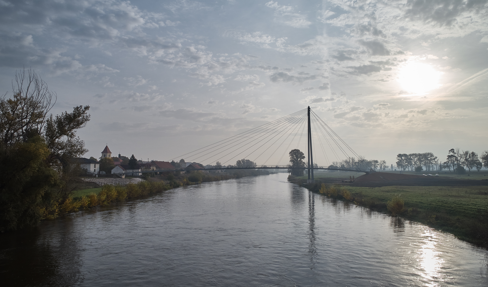
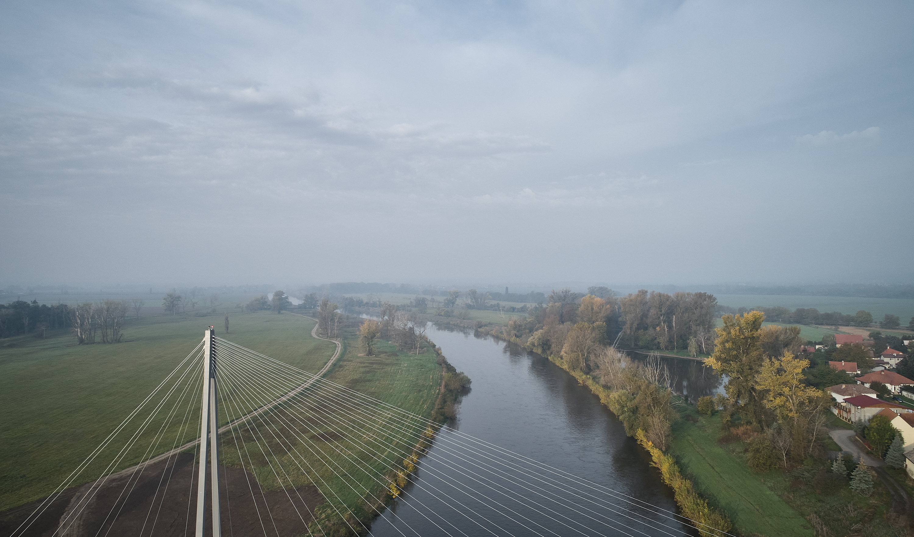
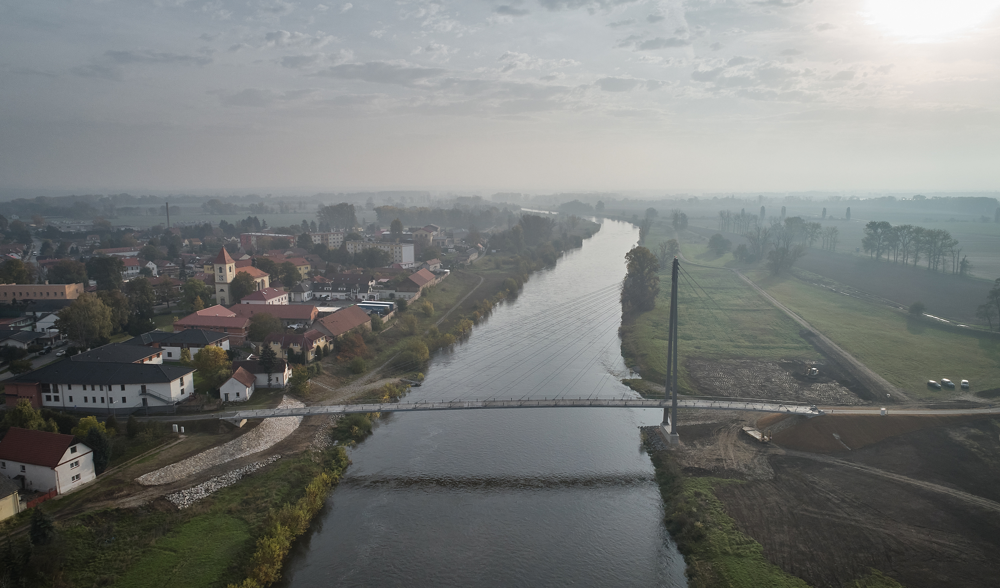
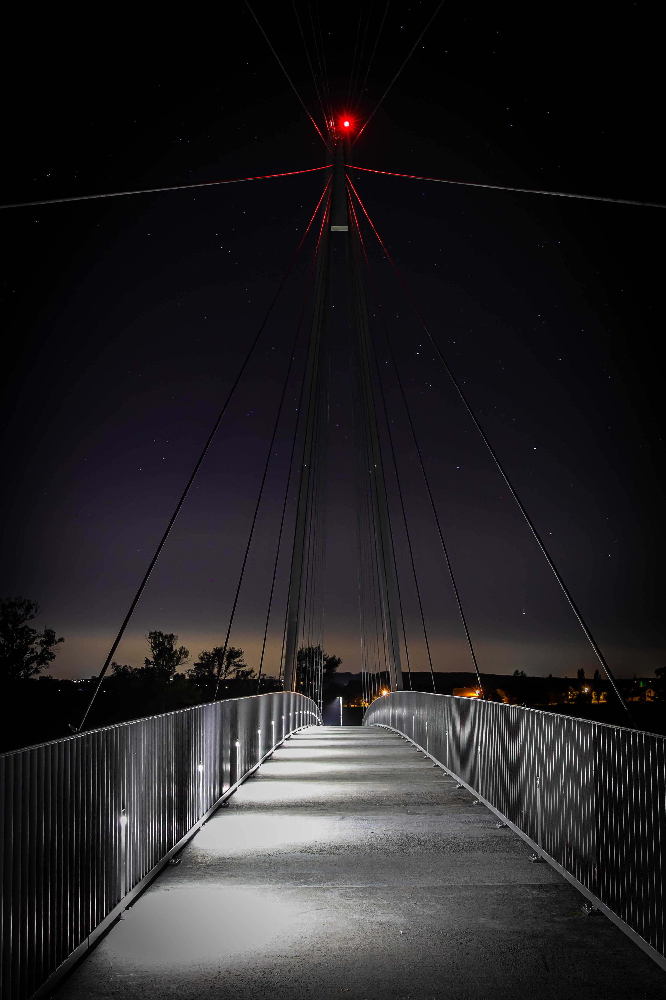
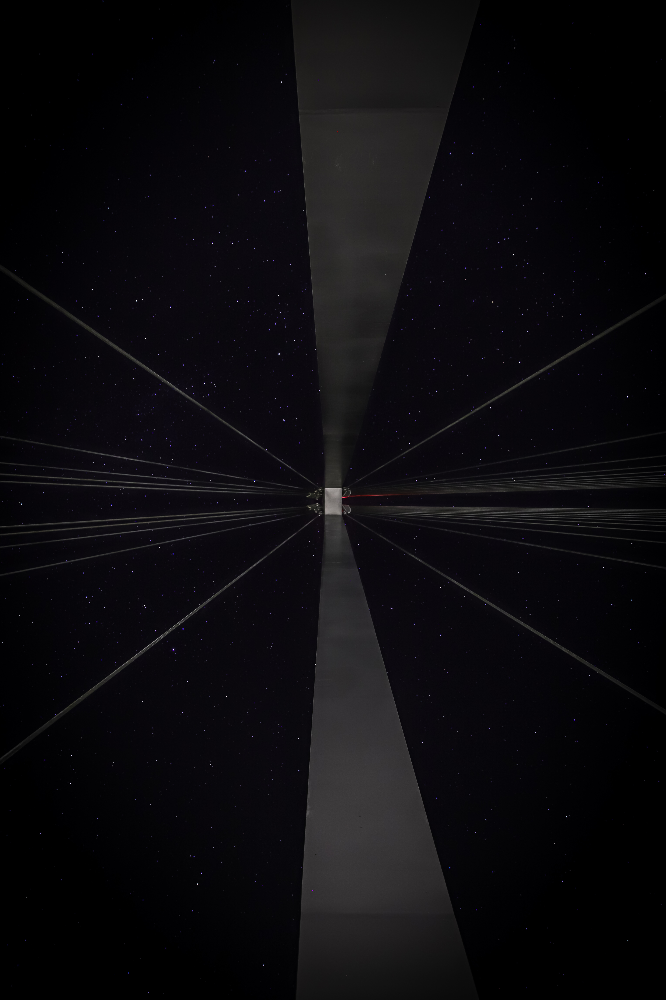
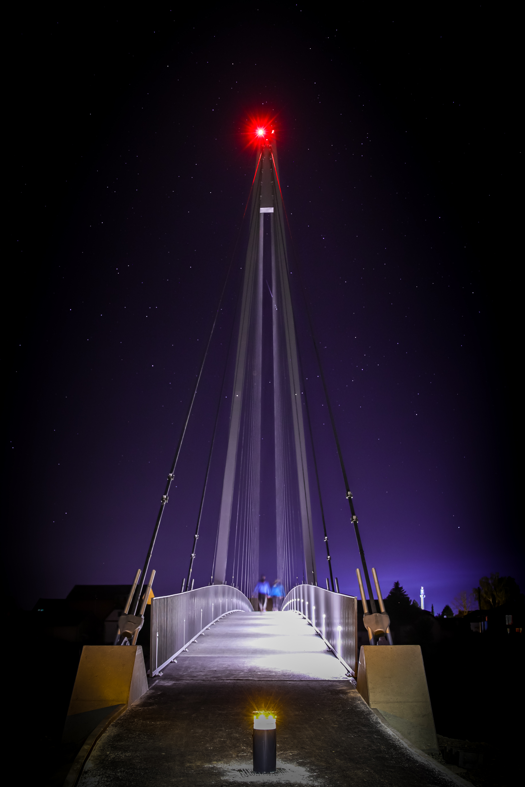
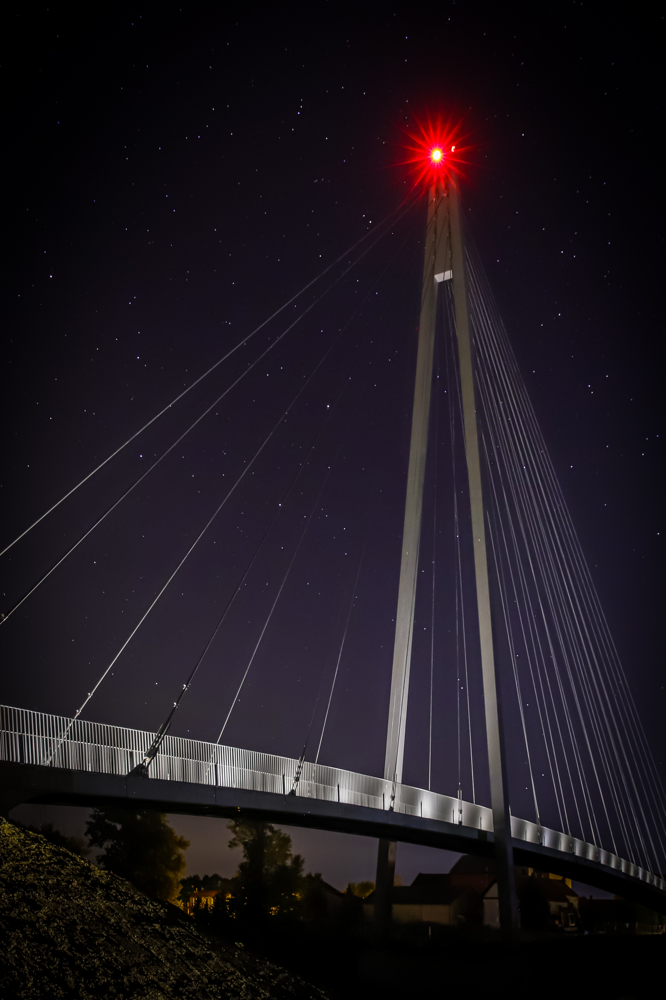
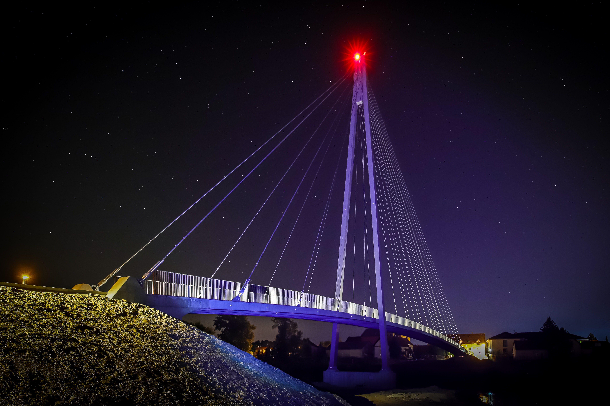

| Authors / Studio |
Petr Tej, Marek Blank, Jan Mourek |
| Licence disclaimer |
Potvrzuji, že mám všechna práva k fotografiím, vizualizacím a materiálům, použitých v mém projektu. |
| Location |
Lužec nad Vltavou
1. máje čp. 176, Lužec nad Vltavou 277 06 |
| Investor |
Obec Lužec nad Vltavou
1. máje čp. 176, Lužec nad Vltavou 277 06 |
| Supplier |
Hochtief a.s.
Plzeňská 16/3217, Praha 5 150 00 |
| Date of project approval |
Říjen 2020 |
Lužec nad Vltavou je obec nedaleko Mělníka v malebné
lužní krajině řeky Vltavy. Od roku 1907, kdy byl vybudován laterální
kanál mezi obcemi Hořín a Vraňany je jedinou obcí v České republice,
která leží celým svým územím na ostrově. Ostrov je zároveň největším
ostrovem na řece Vltavě.
Lávka je vedena přes nesplavný tok řeky mezi obcemi Lužec nad Vltavou a
Bukol. Přes řeku převádí dálkovou severojižní cyklotrasu EuroVelo 7
vedoucí ze Švédska na Sicílii.
Architektonický návrh je výtvarně založen na lehkosti a subtilnosti,
které jsou umožněny díky technologicky extrémně vyspělému materiálu
UHPFRC (ultra-heigh performance fibre reinforced concrete,
ultra-vysokohodnotný beton s rozptýlenou kovovou výztuží). Barevně jsou
všechny prvky konstrukce sjednoceny a dematerializovány tóny středně
šedé barvy.
Lávka je zapojena do krajiny nově vysazenou dubovou alejí podél cesty na bukolské straně. Duby dorostou do výšky pylonu.
Lávka je koncipována jako zavěšená konstrukce s
jedním pylonem a dvěma poli o rozpětích 30+100 m. Hlavní pole překračuje
řeku šířky 70 m. Pylon je ocelový, výšky 40 m a tvoří v rovinaté
krajině protiváhu kostelní věži. Mostovka je vedena ve výškovém oblouku s
poloměrem 777 m a je sestavena z přímo pochozích prefabrikátů z UHPFRC.
Závěsy tvoří 17 párů uzamčených ocelových lan. Mostovka byla nad břehy
montována na pevné skruži. Část nad řekou se montovala letmo. Mostovka
je sepnuta dvěma volnými kabely.
Green building status
Environmental certification
| Type and level of certificate |
-
|
Water management
| Is rainwater used for irrigation? |
|
| Is rainwater used for other purposes, e.g. toilet flushing ? |
|
| Green roof / facade ? |
|
| Is reclaimed waste water used, e.g. from showers and sinks ? |
|
The quality of the indoor environment
| Is clean air supply automated ? |
|
| Is comfortable temprature during summer and winter automated? |
|
| Is natural lighting guaranteed in all living areas? |
|
| Is artificial lighting automated? |
|
| Is acoustic comfort, specifically reverbaration time, guaranteed ? |
|
| Does the layout solution include zoning and ergonomics elements? |
|
Principles of circular economics
| Does the project use recycled materials? |
|
| Does the project use rycyclable materials? |
|
| Are materials with a documented Environmental Product Declaration (EPD) promoted in the project? |
|
| Are other sustainability certifications used for materials and elements? |
|
Energy efficiency
| Energy performance class of the building according to the Energy Performance Certificate of the building |
|
| Is efficient energy management (measurement and regular analysis of consumption data) considered? |
|
| Are renewable sources of energy used, e.g. solar system, photovoltaics ? |
|
Interconnection with surroundings
| Does the project enable the easy use of public transport? |
|
| Does the project support the use of alternative modes of transport, e.g cycling, walking etc. ? |
|
| Is there access to recreational natural areas, e.g. parks, in the immediate vicinity of the building? |
|